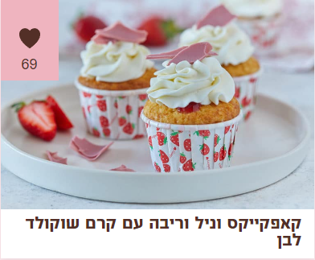

מצרכים:
-
לקאפקייקס:
- 120 גרם חמאה מומסת פושרת
- 1 כוס (200 גרם) סוכר לבן
- 1 גביע (200 מ"ל) שמנת חמוצה
- 2 ביצים בגודל L + חלמון
- 1 כפית תמצית וניל
- גרידה מחצי לימון (לא חובה)
- 1 ו-1/2 כוסות (210 גרם) קמח לבן
- 1 ו-1/2 כפיות (12 גרם) אבקת אפייה
- 1/4 כפית (2 גרם) סודה לשתייה
- 1/2 כפית (4 גרם) מלח
-
למילוי:
- 1/2 (165 גרם) כוס ריבת פטל/תותים
-
לקרם שוקולד לבן:
- 1 ו-1/2 מכלים (375 מ"ל) שמנת
- מתוקה להקצפה
- 200 גרם שוקולד פרה לבן
אופן ההכנה:
-
לקאפקייקס
- מחממים תנור לחום של 180 מעלות.
- מערבבים בקערה את החמאה והסוכר. מוסיפים את השמנת החמוצה ומערבבים היטב. מוסיפים את הביצים, הוניל וגרידת הלימון ומערבבים לאיחוד.
- בקערה נוספת מערבבים את הקמח, אבקת האפייה, הסודה לשתייה והמלח.
- מאחדים בין הקערה עם הקמח לקערה עם החומרים הרטובים, ומקפלים רק עד לקבלת תערובת אחידה.
- יוצקים את הבלילה לתבנית שקעים מרופדת במנג’טים, וממלאים כל שקע עד 3/4 גובה.
- אופים את הקאפקייקס 15-20 דקות, עד שקיסם שננעץ בעוגות יוצא יבש עם פירורים לחים.
- מצננים לטמפ’ החדר. בעזרת סכין חדה או כפית פריזיאן יוצרים חור קטן במרכז כל עוגה וממלאים בריבה עד לכיסוי השקע.
-
לקרם
- בקערת מיקסר עם בלון הקצפה, מקציפים במהירות בינונית את קרם השוקולד הלבן יחד עם שארית השמנת המתוקה (מיכל אחד) עד לקבלת קרם אחיד ויציב. יש להיזהר לא להקציף יותר מידי, כיוון שהקרם נשבר בקלות.
- מעבירים לשקית זילוף עם צנטר משונן ומזלפים קרם מעל כל קאפקייקס.
- מקשטים עם שבבי שוקולד ומגישים.